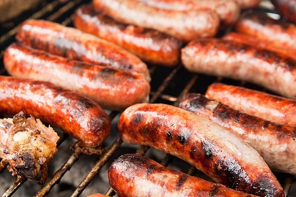

Is it a good idea to feed your dog sausage?
Feeding Your dog sausage.
The definite answer to whether or not your dog can eat sausage is no. It is however not an emergency if your dog happens to eat one sausage that might have fell from your dinner plate. It is always best for us humans and our pets too to avoid oily, fatty, and salty foods, and sausage ticks all of those boxes as a meat. Sausage should never be a part of a dog's diet and will definitely cause health problems if done nonetheless.
What should i do if my dog gets sick from eating sausage?
If for some reason your dog consumed too much sausage and has started to show signs of being sick such as vomiting or nausea, give your dog water as this will help to stop the body from being dehydrated from all the salt and spices that are found in sausages.
The next step would be to keep food away from your dog for the next 24 hrs in order for the sausage to pass. This will give the stomach enough time to settle. Be sure to fill the dog's bowl up whenever you see it go below a certain point as you do not want your dog to be thirsty while you are not around. Your dog might experience dehydration for a couple days so it would be wise to instead have two bowls of water for him/her to drink from to be on the safe side.
Do you cook with sausage grease?
There are people in my family who likes cooking other foods with sausage grease. This food that is cooked with the sausage grease should however never be fed to your dog as this grease has made whatever you cooked more like sausage.
Possible symptoms after feeding your dog sausage
- Lethargy (this is the lack of energy and enthusiasm.
- Diarrhea
- Loss of appetite
- Vomiting
- Nausea
Conclusion
Feeding your dog sausage is a bad idea. There are many other alternatives that will keep your furry friend happy.